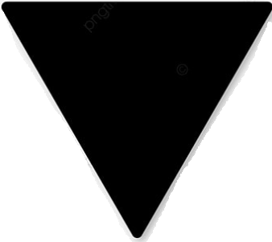

個人簡介
您好，我叫做寶田，也可以叫我Ten。 2018年畢業於國立台灣大學護理學系， 2019-2021年，在台大醫院擔任臨床護理師工作兩年。 2021年4月直到現在，都在Tackle Berry TW， 一間主要販售二手釣魚用品的日商釣具店，擔任店員的工作。 在Tackle Berry 工作的期間也自學日文，通過日文檢定N1。 一句話形容我：富有責任感，追求持續進步，樂於助人的內向務實工作者。
您好，我叫做寶田，也可以叫我Ten。 2018年畢業於國立台灣大學護理學系， 2019-2021年，在台大醫院擔任臨床護理師工作兩年。 2021年4月直到現在，都在Tackle Berry TW， 一間主要販售二手釣魚用品的日商釣具店，擔任店員的工作。 在Tackle Berry 工作的期間也自學日文，通過日文檢定N1。 一句話形容我：富有責任感，追求持續進步，樂於助人的內向務實工作者。
為了成為軟體工程師，做過什麼努力？
從2023年2月開始利用線上課程(Lidemy鋰學院)，從基礎的Command Line、Git、到Javascript(包含online judge)、Html、CSS，從2024年12月底開始學習PHP，利用XAMPP(mySQL)進行後端資料庫的建置。 中間遇到的困難說真的也不少，但就是關關難過關關過， 遇到問題就google尋找答案，成功通過難關，把功能做出來的感覺真的很棒! (雖然有時候遇到bug解不出來真的很想放棄，但還是撐過來了) 作品1:酷媽媽安心農場(持續更新中) 因為父親目前從事有機農業栽培，所以想要自己做一個網頁來幫助他進行農產品銷售。 作品連結：https://github.com/PT-HUANG/kumama 簡述一下目前實做出來的功能： (1) 登入/註冊功能(Session) 利用php prepared statement 防止sql injection 利用password_hash 將密碼雜湊後存在資料庫中 登入後利用session，取得使用者的暱稱後顯示在頁面上 (2) 登入/註冊 利用js實作出顯示/關閉的功能 (3) 聯絡表單 利用Gmail SMTP 做出聯絡表單，按下後會自動寄信到管理者的Gmail 作品2:留言板 在線上課程中跟著老師的指引完成的另一個小side project 作品連結：https://github.com/PT-HUANG/board 簡述一下目前實做出來的功能： (1) 登入/註冊功能 (2) 登入後使用者可以發布、編輯、刪除留言(同時能防止XSS) (3) 使用者可以編輯暱稱，利用table join的方式同步更改已經發布過的留言 (4) 分頁功能
從2023年2月開始利用線上課程(Lidemy鋰學院)，從基礎的Command Line、Git、到Javascript(包含online judge)、Html、CSS，從2024年12月底開始學習PHP，利用XAMPP(mySQL)進行後端資料庫的建置。 中間遇到的困難說真的也不少，但就是關關難過關關過， 遇到問題就google尋找答案，成功通過難關，把功能做出來的感覺真的很棒! (雖然有時候遇到bug解不出來真的很想放棄，但還是撐過來了) 作品1:酷媽媽安心農場(持續更新中) 因為父親目前從事有機農業栽培，所以想要自己做一個網頁來幫助他進行農產品銷售。 作品連結：https://github.com/PT-HUANG/kumama 簡述一下目前實做出來的功能： (1) 登入/註冊功能(Session) 利用php prepared statement 防止sql injection 利用password_hash 將密碼雜湊後存在資料庫中 登入後利用session，取得使用者的暱稱後顯示在頁面上 (2) 登入/註冊 利用js實作出顯示/關閉的功能 (3) 聯絡表單 利用Gmail SMTP 做出聯絡表單，按下後會自動寄信到管理者的Gmail 作品2:留言板 在線上課程中跟著老師的指引完成的另一個小side project 作品連結：https://github.com/PT-HUANG/board 簡述一下目前實做出來的功能： (1) 登入/註冊功能 (2) 登入後使用者可以發布、編輯、刪除留言(同時能防止XSS) (3) 使用者可以編輯暱稱，利用table join的方式同步更改已經發布過的留言 (4) 分頁功能
學習計畫安排
目前仍然在職中，如果開始 WeHelp Bootcamp 的訓練計劃，預計4月份跟公司提離職，4月份採用邊工作邊學習的模式，5月開始就可以全心投入訓練計畫。 目前學習的方式是利用平日上班前2個小時進行學習，休假日時的學習時間約8小時。 開始課程後估計一個星期可以有50-60小時的學習時間
目前仍然在職中，如果開始 WeHelp Bootcamp 的訓練計劃，預計4月份跟公司提離職，4月份採用邊工作邊學習的模式，5月開始就可以全心投入訓練計畫。 目前學習的方式是利用平日上班前2個小時進行學習，休假日時的學習時間約8小時。 開始課程後估計一個星期可以有50-60小時的學習時間
是否有想要加入的公司？
沒有，理由有3個： (1)因為目前我不確定自己到底有沒有辦法真的成為一名軟體工程師 (2)即使真的可以成功轉職，目前也還不知道自己要走前端還是後端 (3)我想要透過Bootcamp來確定自己的能力可以做到什麼程度
沒有，理由有3個： (1)因為目前我不確定自己到底有沒有辦法真的成為一名軟體工程師 (2)即使真的可以成功轉職，目前也還不知道自己要走前端還是後端 (3)我想要透過Bootcamp來確定自己的能力可以做到什麼程度
請描述一件產生明顯負面情緒的經歷
其實我本來是想要申請Appwork School的，但3/12號的時候發現他們今年度開的梯次是配合政府「數位青年 T 大使推動計畫」，只限定開放給剛畢業的大學生。 坦白說真的超崩潰，有種計畫全部都被打亂的感覺，但當下就馬上開始尋找替代方案，也告訴自己不要被單一選擇給侷限住了，於是在3/13的時候找到Wehelp，開始申請。 前陣子看了一本書《讓尼采當你的心理師》，我特別喜歡裡面的一段話：「你沒有放下自己沒落的勇氣，所以你絕不可能煥然一新。屬於今天的我們的翅膀、色彩、服飾、力量，明天都必須成為灰燼」，尼采認為，即便我們今日如同太陽般沒落了，明日仍然夠再次升起，不要害怕沒落，那是使我們成長的養分。 即便遇到了不如意的事情，也要相信自己能有再站起來的勇氣，持續面對挑戰。 平時偶爾也會去運動、戶外活動(釣魚)、跟朋友聊天等等，也喜歡看動畫放鬆心情。
其實我本來是想要申請Appwork School的，但3/12號的時候發現他們今年度開的梯次是配合政府「數位青年 T 大使推動計畫」，只限定開放給剛畢業的大學生。 坦白說真的超崩潰，有種計畫全部都被打亂的感覺，但當下就馬上開始尋找替代方案，也告訴自己不要被單一選擇給侷限住了，於是在3/13的時候找到Wehelp，開始申請。 前陣子看了一本書《讓尼采當你的心理師》，我特別喜歡裡面的一段話：「你沒有放下自己沒落的勇氣，所以你絕不可能煥然一新。屬於今天的我們的翅膀、色彩、服飾、力量，明天都必須成為灰燼」，尼采認為，即便我們今日如同太陽般沒落了，明日仍然夠再次升起，不要害怕沒落，那是使我們成長的養分。 即便遇到了不如意的事情，也要相信自己能有再站起來的勇氣，持續面對挑戰。 平時偶爾也會去運動、戶外活動(釣魚)、跟朋友聊天等等，也喜歡看動畫放鬆心情。
關於這份申請網頁，分享一個開發時的技術心得
關於按鈕點擊後，利用Javascript顯示內容的部分，原本設定想要用querySelectorAll+ for loop或是forEach的方式逐一對每一個元素新增Eventlistener，但以現階段的能力還沒辦法找出問題點在哪邊，所以暫時用比較土法煉鋼的方式去完成這個功能。
關於按鈕點擊後，利用Javascript顯示內容的部分，原本設定想要用querySelectorAll+ for loop或是forEach的方式逐一對每一個元素新增Eventlistener，但以現階段的能力還沒辦法找出問題點在哪邊，所以暫時用比較土法煉鋼的方式去完成這個功能。
請用簡短兩三句話，描述對你而言，最重要的一項人際交往原則
朋友重質不重量，與其增加廣度，我比較喜歡經營深厚的友誼關係。
朋友重質不重量，與其增加廣度，我比較喜歡經營深厚的友誼關係。
其他想要對我們說的事情
雖然發現WeHelp的時間點很晚，但我是很真誠的在寫這份申請書，也做好準備了。 無論申請成功與否，也請告訴我可以再更好、更進步的地方，感謝您們辛苦看到這邊。
雖然發現WeHelp的時間點很晚，但我是很真誠的在寫這份申請書，也做好準備了。 無論申請成功與否，也請告訴我可以再更好、更進步的地方，感謝您們辛苦看到這邊。